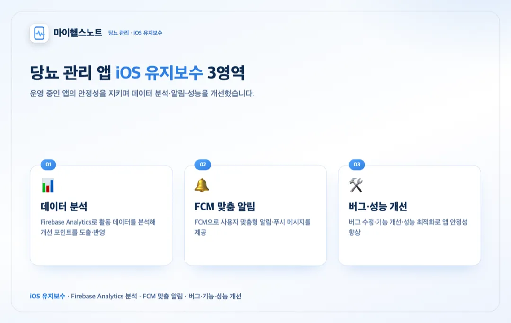

홈 / 포트폴리오 / 마이헬스노트 — 당뇨 관리 iOS
유지보수·전환
당뇨 관리 앱 마이헬스노트 iOS 유지보수 (데이터 분석·알림·성능 개선)
참여 기간 · 2019.09 ~ 2019.12

포트폴리오 소개
- 혈당·식사·운동 등 생활습관을 기록하면 맞춤형 메시지를 제공하는 당뇨 관리 앱의 iOS 유지보수를 담당했습니다.
- 데이터 분석 기반의 서비스 개선, 맞춤형 알림, 그리고 버그·기능·성능 개선을 진행했습니다.
작업 범위
- iOS 앱 유지보수 (버그 수정·기능 개선·성능 최적화)
- Firebase Analytics로 사용자 활동 데이터 분석·서비스 개선
- FCM으로 맞춤형 알림·메시지 제공
- 운영 중 이슈 대응·안정화
주요 업무 및 기능
- 데이터 분석: Firebase Analytics로 활동 데이터를 분석해 개선 포인트 도출·반영
- 알림: FCM으로 사용자 맞춤형 알림·푸시 메시지 제공
- 유지보수: 버그 수정, 기능 개선, 성능 최적화로 앱 안정성 향상
주안점
- 운영 중인 앱의 안정성을 지키며 개선(회귀 최소화)
- 데이터 분석으로 근거 있는 개선 우선순위 도출
- 알림의 정확한 전달과 사용자 경험
문제점
- 운영 중인 당뇨 관리 앱에서 버그·성능 이슈와 개선 요구가 이어졌습니다.
- 무엇을 먼저 개선할지 근거가 필요했습니다.
- 사용자에게 맞춤형 정보를 제때 전달할 수단이 필요했습니다.
프로젝트 목표
- iOS 앱을 안정적으로 유지보수하며 버그·기능·성능을 개선.
- Firebase Analytics로 활동 데이터를 분석해 개선 우선순위를 도출.
- FCM으로 맞춤형 알림·메시지를 제공.
주안점
- 운영 안정성(회귀 최소화)을 지키는 유지보수.
- 데이터 분석 기반의 개선 판단.
- 알림의 정확한 전달과 사용자 경험.
프로젝트 성과
데이터 분석 기반 서비스 개선
Firebase Analytics로 사용자 활동 데이터를 분석하고, 그 결과를 iOS 앱 개선에 반영했습니다.
맞춤형 알림(FCM) 제공
FCM으로 사용자 맞춤형 알림·푸시 메시지를 제공해 재방문과 참여를 지원했습니다.
iOS 유지보수·안정화
버그 수정·기능 개선·성능 최적화로 운영 중 앱의 안정성을 높이는 유지보수를 담당했습니다.
비슷한 프로젝트를 계획 중이신가요? 아이디어 단계여도 괜찮습니다.
프로젝트 문의하기 →